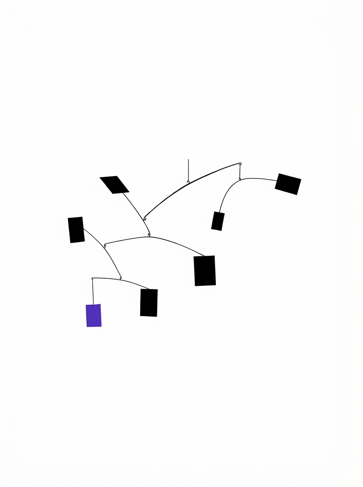
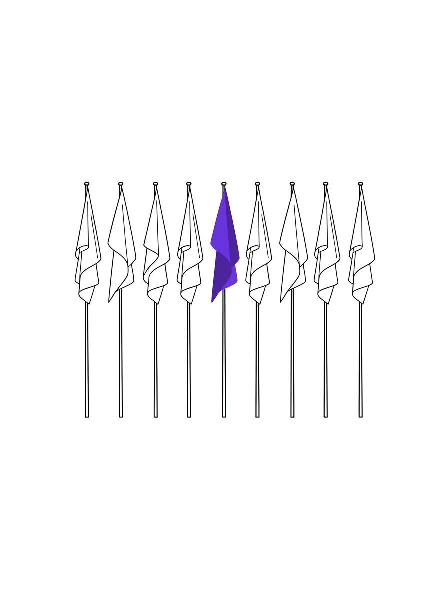

Lab
The program's visual archive: generated plates and short films in a single technical-drawing language, each labelled as generated illustration. The data-driven figures live where the data lives — on the home page and in the papers; this room is the apparatus cabinet.
Apparatus, in motion
Three 8-second loops. Generated, muted, and captioned like the instruments they depict.
One plate per standing question
Click any plate to open the question's research in the archive.




The patent series
One technical-drawing figure per paper — the same figures that appear beside each entry in the archive — plus the process plates used across the site.
Provenance: the plates and film are generated imagery, art-directed for this site and disclosed as such — the research they illustrate is real, documented, and linked. Interactive simulations and visual essays are the next additions here; they'll appear when they exist, not before.